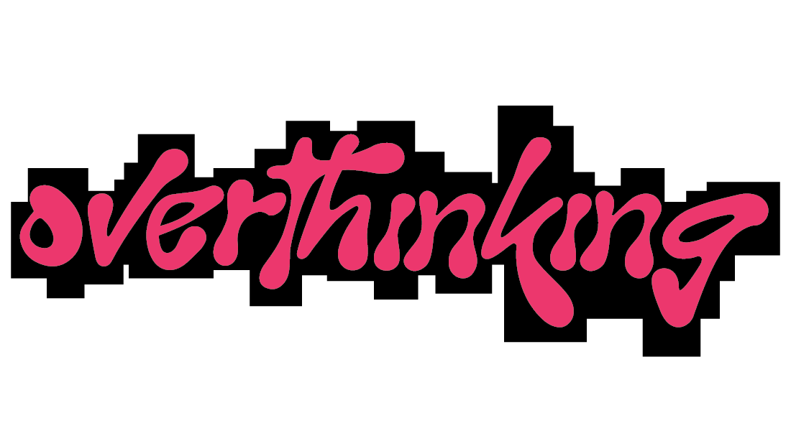
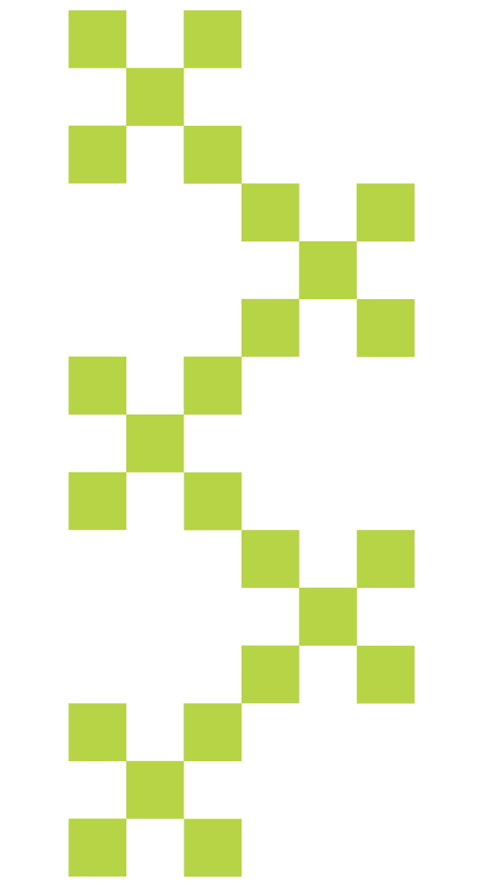

my brain opens this tab before i even get out of bed

one thought becomes ten, then a hundred

you replay moments
what you said
what you didn't say
what it might mean
you imagine outcomes
what could go wrong
what you should have done differently
it doesn't stop on its own,
it builds.
each thought opens another tab
and
none of them close.